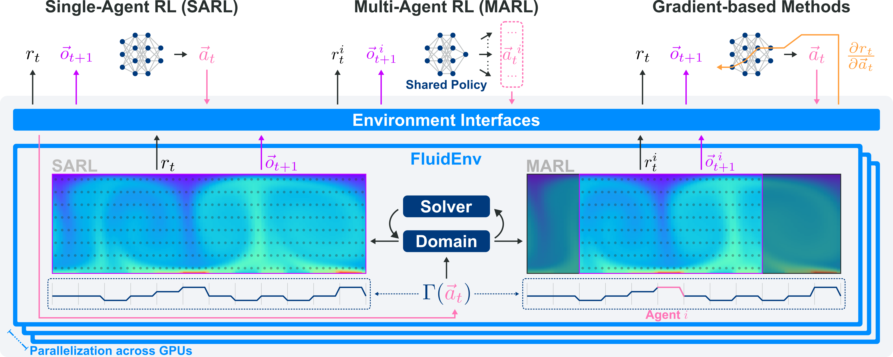
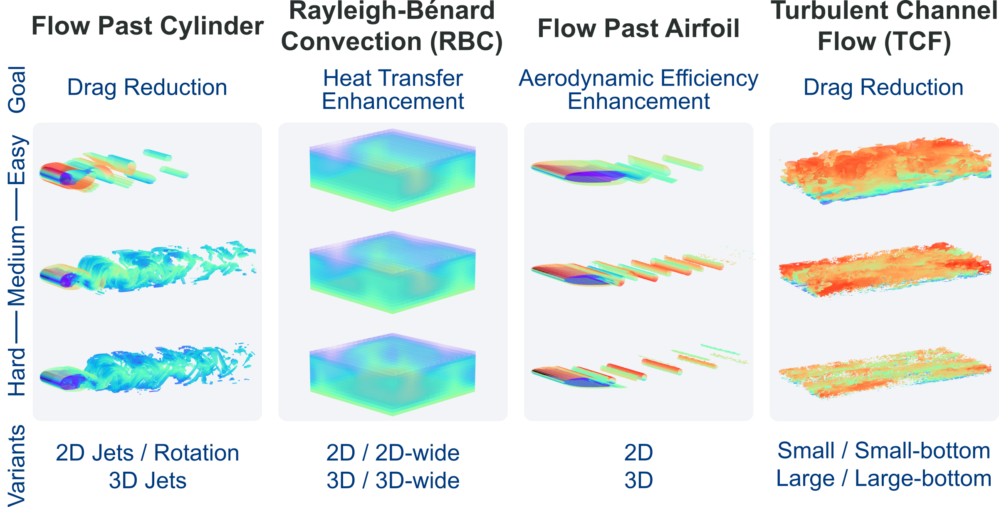
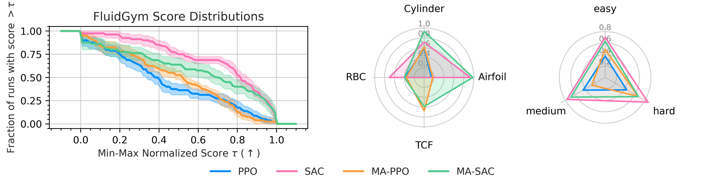
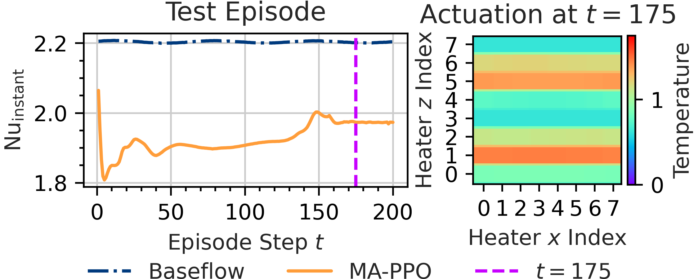
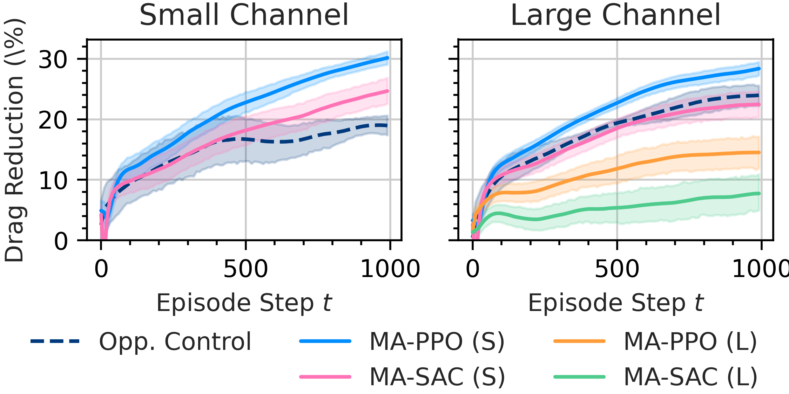
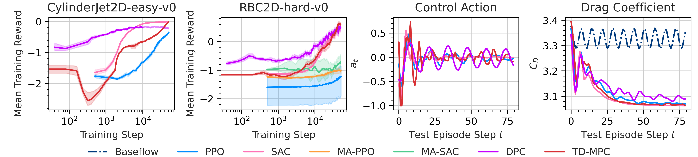

Abstract
Reinforcement learning (RL) has shown promising results in active flow control (AFC), yet progress in the field remains difficult to assess as existing studies rely on heterogeneous observation and actuation schemes, numerical setups, and evaluation protocols. Current AFC benchmarks attempt to address these issues but heavily rely on external computational fluid dynamics (CFD) solvers, are not fully differentiable, and provide limited 3D and multi-agent support. To overcome these limitations, we introduce FluidGym, the first standalone, fully differentiable benchmark suite for RL in AFC. Built entirely in PyTorch on top of the GPU-accelerated PICT solver, FluidGym runs in a single Python stack, requires no external CFD software, and provides standardized evaluation protocols. We present baseline results with PPO, SAC, DPC, and TD-MPC, and release all environments, datasets, and trained models as public resources. FluidGym enables systematic comparison of control methods, establishes a scalable foundation for future research in learning-based flow control, and is available at github.com/safe-autonomous-systems/fluidgym.
Benchmark Overview

The architecture of FluidGym is designed to unify computational fluid dynamics (CFD) and reinforcement learning under a single, ML-centric framework. At its core, the system integrates the GPU-accelerated PICT solver directly with a PyTorch interaction layer, allowing environment stepping and backpropagation to utilize the same autograd mechanisms as standard neural networks. This standalone design eliminates the need for external CFD software or complex coupling code, as all simulations and control interfaces live within a single Python stack. The framework utilizes a FluidEnv abstraction to encapsulate physical computations while exposing standardized observation, action, and reward interfaces compatible with common RL libraries like Gymnasium and PettingZoo. Furthermore, the architecture is built for scalability, supporting massively parallel execution across multiple GPUs to handle large-scale experiments and high-fidelity 3D simulations.
Environment Classes in FluidGym

The FluidGym benchmark suite consists of four primary environment classes, each designed to challenge reinforcement learning agents with distinct physical phenomena and control objectives. Flow Past a Cylinder serves as a canonical aerodynamic testbed where agents utilize synthetic jets or rotary oscillations to suppress periodic vortex shedding and minimize drag. Rayleigh-Bénard Convection (RBC) simulates buoyancy-driven flows between heated and cooled plates, requiring agents to coordinate an array of bottom heaters to manipulate convective heat transfer and stabilize chaotic thermal plumes. In the Flow Past an Airfoil environments, agents manage flow separation on a NACA 0012 profile to enhance aerodynamic efficiency by optimizing the lift-to-drag ratio through surface-mounted actuators. Finally, the Turbulent Channel Flow (TCF) class investigates wall-bounded turbulence, tasking agents with reducing skin friction drag via high-dimensional, spatially distributed blowing and suction at the channel walls.
Baseline Experiments

The baseline evaluation of FluidGym involves an extensive study of modern reinforcement learning algorithms across all thirteen environment variants and three difficulty levels. Using standardized training and evaluation protocols, the research benchmarks Proximal Policy Optimization (PPO) and Soft Actor-Critic (SAC), alongside their multi-agent counterparts, MA-PPO and MA-SAC. Performance profiles across the suite reveal that SAC generally offers superior sample efficiency and higher normalized rewards in continuous control tasks compared to PPO. Furthermore, the experiments demonstrate the power of differentiability; by leveraging reward gradients through Differentiable Predictive Control (DPC), the framework achieves high-quality control policies with a significant reduction in training time. These baselines establish a rigorous foundation for future research, confirming that the benchmark can effectively distinguish between algorithmic strengths in complex, turbulent flow scenarios.
Multi-Agent Interaction & Domain Transfer


FluidGym facilitates the study of complex coordinated behaviors through its native support for multi-agent reinforcement learning and cross-domain policy transfer. In Rayleigh-Bénard Convection environments, individual agents learn to coordinate bottom-wall heating patterns to form stable, global convection rolls, demonstrating that decentralized control can achieve emerging global objectives. Furthermore, the framework enables significant practical efficiencies through domain transfer; for instance, policies trained on smaller Turbulent Channel Flow domains can be successfully applied to larger scales without retraining. This translation-equivariant approach, where agents manage local actuators based on local observations, proves that strategies learned in computationally cheaper, low-dimensional settings remain robust when scaled to more complex, high-fidelity 3D environments.
Gradient-Based Learning of Control Policies

By integrating a fully differentiable simulation pipeline, FluidGym enables policy learning through reward gradients, offering a powerful alternative to traditional derivative-free reinforcement learning. Training results for Differentiable Predictive Control (DPC) demonstrate significant efficiency gains, outperforming standard model-free algorithms by one to two orders of magnitude in environments like the 2D cylinder flow. In specific test episodes, DPC-trained policies successfully attenuate flow oscillations and achieve substantial drag reduction comparable to advanced model-based methods. This capability underscores the framework's utility for research into gradient-based control, proving that direct backpropagation through the fluid dynamics allows for rapid convergence and effective strategy discovery in complex active flow control tasks.
BibTeX
@inproceedings{becktepe-fluidgym26,
title={Plug-and-Play Benchmarking of Reinforcement Learning Algorithms for Large-Scale Flow Control},
author={Jannis Becktepe and Aleksandra Franz and Nils Thuerey and Sebastian Peitz},
booktitle={Forty-third International Conference on Machine Learning},
year={2026},
url={https://openreview.net/forum?id=ilEooI8fK1}
}